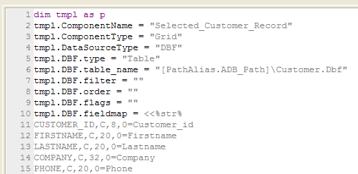
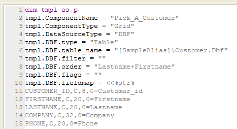
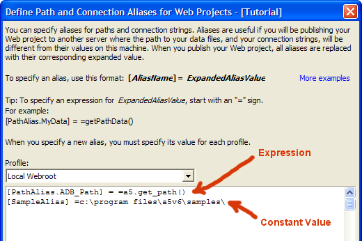

Path and Connection String Aliases
When you create a web application, you may be creating and testing it on one machine, but deploying it on a another machine - typically called the "production" machine. The "production" machine may be a machine on your LAN, or it may be at your ISP (assuming that the ISP is licensed to host Alpha Anywhere Web Applications). In order for your web application to work when deployed on a different server from the one on which it was developed, you will need to ensure that all paths to your data files, and all connection strings (in the case of applications that access SQL databases), are still valid. Path aliases, and Connection String aliases are used to ensure that your applications will work correctly when deployed on your production server.
Aliases are placeholders that are replaced at the time you publish your web application with the actual path used by your web host. Alias names are enclosed in square brackets. For example, [PathAlias.ADB_Path], [ConnectionAlias.Northwind], and [MyData] are all valid alias names.
When you publish a web application, you choose a profile that defines various options, such as where the target machine is located, and the folder into which the application should be copied. Each web project that you create always has one profile called "Local Webroot" which is for the Application Server on your development machine. But, you are free to define additional profiles. When you define a new alias, you must specify its value for each profile. So, for example, you might have an alias called [PathAlias.Customer_Data]. For the "Local Webroot" profile, this alias might be mapped to c:\data, but for a profile called "MyProductionServer", this alias might be mapped to \\myserver\mydata.
 Note : Each alias must define the
path to a directory. Aliases cannot be URLs.
Note : Each alias must define the
path to a directory. Aliases cannot be URLs.
PathAlias_ADB_PathAlias>The [PathAlias.ADB_Path] Alias
Every profile that you create has one system defined alias: [PathAlias.ADB_Path], and as many user-defined aliases as you want. For the "Local Webroot" profile, the [PathAlias.ADB_Path] alias is always mapped to the path of the current web publishing application. The expression, a5.get_path(), returns this value.

 NOTE : If all of the tables in
your database are in the same folder as the database file, then
the only path alias that you will need is the system default [PathAlias.ADB_Path]
alias. However, if some of the tables in your database are not in the
same folder as the database file (these tables are referred
to as "external" tables), then you will need to create
a user-defined alias for each "external" path.
NOTE : If all of the tables in
your database are in the same folder as the database file, then
the only path alias that you will need is the system default [PathAlias.ADB_Path]
alias. However, if some of the tables in your database are not in the
same folder as the database file (these tables are referred
to as "external" tables), then you will need to create
a user-defined alias for each "external" path.
Components Use Aliases Automatically
When you create a component using one of the component builders (e.g. the Grid or Dialog component), Alpha Anywhere will replace all paths to data files, and all connection strings with their corresponding aliases. This occurs when you save the component.
So for example, assume you are in the sample AlphaSports database that ships with Alpha Anywhere, and you create a grid component that is based on the customer table. Assuming that Alpha Anywhere is installed in the c:\Program Files\A5V6 folder, the fully qualified path to the customer table is c:\Program Files\A5v6\Samples\AlphaSports\Customer.dbf. When the grid component is saved, all references to the customer table in the Grid component will be automatically changed to [PathAlias.ADB_Path]\customer.dbf.
When the component is published, the references to [PathAlias.ADB_Path] are replaced. If, for example, the component is published using the " Local Webroot " profile, then [PathAlias.ADB_Path]\customer.dbf might expand to something like c:\inetpub\data\customer.dbf. But if the component is published using the "MyProductionServer" profile, and for this profile, [PathAlias.ADB_Path] maps to \\myserver\mydata, then the customer table filename will expand to \\myserver\mydata\customer.dbf.
Using a connection string alias, for example, you might build an application that uses a Microsoft Access database on the development machine, but when published to the production server uses a SQL Server database. This would be easily accomplished by specifying an alias that maps to an Access connection string for the "Local Webroot" profile, but maps to an SQL Server connection string for the profile that was used to publish to the production server.
When you save a component you can check to see if Alpha Anywhere has used an alias for the data paths and connection strings in your component by switching to the Xbasic view and seeing if the Xbasic shown in this view is using alias names. If it is not, then you need to define an appropriate alias and resave the component. In the image shown below, you can see that the path in the "customer.dbf" table has been replaced by the [SampleAlias] alias.

The Evolution of an Alias
|
When you ... |
You use ... |
|
connect to a database or table. |
the real path to the database or table. |
|
define the data that populates a dynamic list |
the real path to the database or table. |
|
save the component. |
the real path is replaced by an alias. |
|
publish the component. |
the alias is replaced by the path to the published database or table. |
If you create .A5W pages you can use aliases in your code. For example, you might have the following Xbasic commands in a snippet of Xbasic in a page:
|
<%a5 dim t as P t = table.open("customer") ? t.lastname + "<br>" t.close() %> |
Admittedly, this Xbasic does not do anything very profound (it just prints the last name value from the first record into the page), but it would fail if the database in which the customer table was located was not open when the page was executed.
Remember, when the Application Server is running, there is no requirement that any database (i.e. .adb file) be open, and there is no guarantee that if a database is open, that it will be the same database that you had open at the time you designed the .A5w page.
In order to make this page work under all circumstances, the filename for the "customer" table must be fully qualified, as shown below:
|
<%a5 dim t as P t = table.open("c:\Program files\a5v6\Samples\Alphasports\customer") ? t.lastname +"<br>" t.close() %> |
However, the problem with this Xbasic is that this might not be the correct path to the "customer" table on the production server. Using aliases, this Xbasic can be re-written as:
|
<%a5 dim t as P t = table.open("[PathAlias.ADB_Path]\customer") ? t.lastname +"<br>" t.close() %> |
You can create aliases when you define the properties of your profiles.
From the Web Projects Control Panel, click the Profiles button to displays the Profile Editor.
Select General > Aliases. This displays the Aliases Editor.

 Note : An expression
( =a5.get_path()) is preceded by a equal sign
"=", resulting in two equal signs
in the line. A constant value ( c:\program files\a5v6\samples\
) has only one equal signs in the line.
Note : An expression
( =a5.get_path()) is preceded by a equal sign
"=", resulting in two equal signs
in the line. A constant value ( c:\program files\a5v6\samples\
) has only one equal signs in the line.
There are several other ways to get to the Aliases Editor :
From the Grid Component Builder and the Dialog Builder, select Options > Define Path and Connection String Aliases.
While defining an event handler script in the Dialog Builder, select Insert > Path and Connection Aliases > Define Alias.
See Also
Creating a New Profile, Application Variables
Limitations
Web publishing applications only.